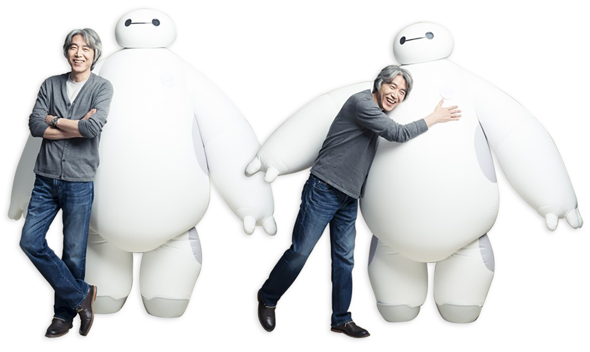

'빅 히어로' 김상진 캐릭터 디자인 수퍼바이저가 월트디즈니의 작업환경과 저력, 애니메이터로 입사하면서 경험한 일들을 전했다. 김상진 캐릭터 디자인 수퍼바이저는 14일 오후 서울 영등포구 여의도 콘래드 호텔에서 헤럴드POP과 만나 이번 작품과 애니메이션에 대한 다양한 이야기를 나눴다.
'빅 히어로'는 동명의 마블 코믹스 원작에 영감을 얻어 제작된 작품으로 천재 형제가 개발한 로봇 베이맥스와 친구들 여섯 명이 히어로가 되는 이야기를 그렸다. 라이언 포터, 다니엘 헤니, 제이미 정, 마야 루돌프, 제임스 크롬웰, T.J. 밀러, 알란 터딕 등이 목소리 연기로 참여했다.
특히 이번 작품에는 한국인 스태프가 참여해 관심을 모았다. 그는 한국인 최초의 디즈니 수석 애니메이터인 김상진 캐릭터 디자인 수퍼바이저로, '겨울왕국'의 안나와 엘사의 어린 시절 캐릭터를 비롯해 '볼트' '라푼젤' 등에 참여한 바 있다.
"디즈니에 입사한지 19년이에요. 20년째에 접어들었습니다. 디즈니에 들어갈 때만해도 제일 일하고 싶은 직장이었죠. 디즈니가 한동안 침체를 겪었지만 아직도 그런 곳이에요. 애니메이션을 상징하는 곳이거니와 상징뿐 아니라 실제적으로 작품을 제작해 내는 장소에요." 많은 사람들이 생각하듯이 그 역시 디즈니에 대한 환상이 있었다. 그리고 그곳은 그런 환상을 스크린에 풀어내기까지 다양한 노력으로 일궈냈다.
"디즈니에 처음 들어가서 보고 느낀 것이 있어요. 아직도 간간히 그런 것을 느끼는데 굉장히 과도하다 싶을 정도로 디테일한 부분에 대해 신경을 많이 쓰더라고요. 처음 들어갔을 때 쇼크 정도의 느낌을 받았어요. 우리가 화면을 보면서 놓치는 디테일이 굉장히 많이 있어요. 휙 지나가는 부분도 디테일을 집어넣기 위한 노력을 하는데 그걸 보면 '왜 이러지'할 정도로 합니다. 그게 디즈니의 무서움이고 파워죠." 디즈니에 애니메이터로 입사한 김상진 캐릭터 디자인 수퍼바이저는 '판타지아2000'이라는 작품으로 일을 시작했다. 약 60년이 지나서 2편을 만들었다. 들어간 당시 1995년이었다. 어느 덧 디즈니의 중요한 위치에 자리잡은 김상진 캐릭터의 꿈은 어떤 애니메이터도 같은 생각인 자신의 애니메이션을 만드는 것이다. 과연 그가 만든 애니메이션을 언제 한국 극장가에서 볼 수 있을 지 기대를 모은다.

Q. 캐릭터 디자인과 스토리의 연관성이 중요할 것 같다.
스토리가 우선이다. 디자인이 돼있어도 스토리가 바뀌고 수정되면 디자인이 또 바뀐다. 스토리에 따라서 그렇게 간다.
Q. 예를 들자면.
예를 들면 초기 스토리에서는 캐릭터에 직업 같은 게 있었다. 고고 같은 경우는 자전거 타고 배달하는 캐릭터였다. 와사비는 스시를 만드는 요리사였다. 스토리가 바뀌면서 복장도 맞춰서 디자인했다.
Q. 베이맥스 캐릭터의 디자인은 어떻게 이뤄졌나.
베이맥스 캐릭터를 위해 존 라세터와 감독들이 주문한 것은 한가지다. 설정이 힐링 로봇, 간호사 로봇이다. 딱딱하지 않고 사랑스러우면서 귀엽고 폭신폭신한 로봇으로 만들어달라고 했다. 로봇은 차갑지 않나. 기계다. 안기고 싶은 로봇을 주문한 게 내게 도전적인 과제였다. 일단 처음에는
크리스 윌리엄스 감독이 기본적인 그림을 그렸다. 현재 모습과 흡사한데 달랐다. 거기서부터 아이디어가 시작됐다.
Q. 작업하는데 힘든 점은 없었나.
힘든 거야 있다. 스트레스가 있는데 어한 일을 하는 스트레스와 종류가 다르다. 좋은 일을 하면서도 감독이 요구하는 결과물을 내놓지 못할 때가 그렇다. 그보다 심한 것은 내가 원하는 것을 만들어내지 못할 때가 있다. 생각만큼 안 나올 때 스트레스가 있다.
Q. 애니메이터로서 고비는 없었나.
일과 관련된 것이지만 10년 전인데 디즈니에서 2D 애니를 그만두면서 공식적으로 안 만든다고 했을 때가 있었다. 모두 CG 애니메이션을 제작한다고 하면서 2D로 종이에 연필로 그리는 사람들이 직업을 한꺼번에 잃은 적이 있다. 그때 선택하는 시점이 있었다. 컴퓨터를 배워 CG작업을 할 것인지, 나갈 것인지 선택해야했다. 그때 아티스트들이 많이 떠났다. 대부분 일을 많이 잃었다. 그때 힘들었다.
Q. 애니메이션으로 힐링이 되는 부분이 있지는 않은가.
아무래도 있을 것이다. 회의에 들어가면 사람들이 농담을 많이 한다. 진지하지만 농담을 주고받고 재밌는 참고 영상을 찾아보며 낄낄대기도 하는 분위기다. 전체적인 작업 분위기라는 게 그렇게 만들어 주는 것 같다. 창조적으로 일을 할 수 있는 환경을 제공하는 게 아마 그런 역량을 주지 않나 싶다.
Q. 앞으로의 목표는 무엇인가.
아티스트로서 나만 그렇지는 않은 것이 작품을 내놓은 다음에 '더 잘 했을 텐데'하는 후회가 든다. 그런 후회가 안 남는 것을 해볼 수는 없을까 싶다. 항상 더 발전을 할 수 있는 여지는 누구나 다 있는 것 같다. 또 아이디어가 안 나올 때가 있다. 그런 것을 뛰어넘는 수준까지 갈수 없나 생각한다. 개인적으로 내 이름을 걸고 작품을 만들어 보고 싶은 욕심도 있다. 애니메이터들의 궁극적인 소망 아닌가 싶다. 죽기 전에 이루도록 해보겠다.